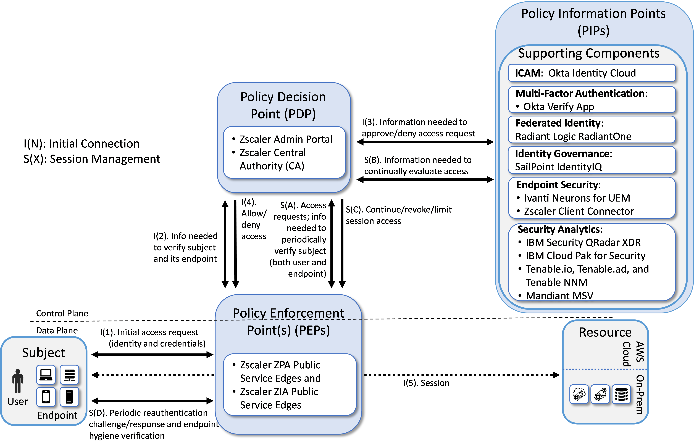
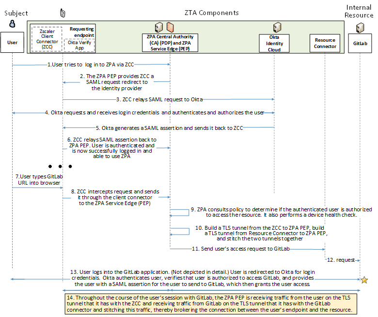
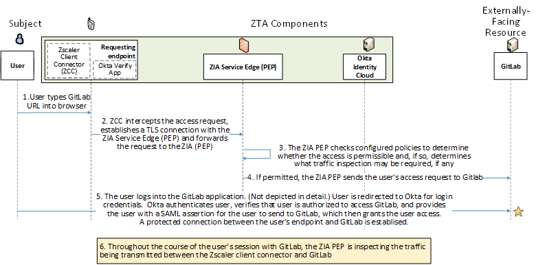

Enterprise 1 Build 2 (E1B2) - EIG Run - Zscaler ZPA Central Authority (CA) as PE#
Note
This page is supplementary material for the NIST SP 1800-35 publication.
Technologies#
E1B2 uses products from Amazon Web Services, IBM, Ivanti, Mandiant, Okta, Radiant Logic, SailPoint, Tenable, and Zscaler. Certificates from DigiCert are also used. For more information on these collaborators and the products and technologies that they contributed to this project overall, see Collaborators and Their Contributions.
E1B2 components consist of Zscaler Admin Portal, Zscaler Central Authority, Zscaler Internet Access (ZIA) Public Service Edges, Zscaler Private Access (ZPA) Public Service Edges, Okta Identity Cloud, Radiant Logic RadiantOne Intelligent Identity Data Platform, SailPoint IdentityIQ, Okta Verify App, Zscaler Client Connector, IBM Security QRadar XDR, Tenable.io, Tenable.ad, Tenable NNM, IBM Cloud Pak for Security, Mandiant Security Validation (MSV), Zscaler Application Connector, DigiCert CertCentral, and AWS IaaS.
Table 1 lists all of the technologies used in E1B2. It lists the products used to instantiate each ZTA component and the security function that each component provides.
Table 1 - E1B2 Products and Technologies
Component |
Product |
Function |
|---|---|---|
PE |
Zscaler ZPA Central Authority (CA) |
Decides whether to grant, deny, or revoke access to a resource based on enterprise policy, information from supporting components, and a trust algorithm. |
PA |
Zscaler ZPA Admin Portal and ZPA CA |
Executes the PE’s policy decision by sending commands to a PEP that establishes and shuts down the communication path between subject and resource. |
PEP |
Zscaler Public Service Edges |
Guards the trust zone that hosts one or more enterprise resources; establishes, monitors, and terminates the connection between subject and resource as directed by the PA; forwards requests to and receives commands from the PA. |
ICAM - Identity Management |
Okta Identity Cloud |
Creates and manages enterprise user and device accounts, identity records, role information, and access attributes that form the basis of access decisions within an organization to ensure the correct subjects have the appropriate access to the correct resources at the appropriate time. |
ICAM - Access & Credential Management |
Okta Identity Cloud |
Manages access to resources by performing user and device authentication (e.g., SSO and MFA) and using identity, role, and access attributes to determine which access requests are authorized. |
ICAM - Federated Identity |
Radiant Logic RadiantOne Intelligent Identity Data Platform |
Aggregates and correlates all attributes relating to an identity or object that is being authorized by a ZTA. It enables users of one domain to securely access data or systems of another domain seamlessly, and without the need for completely redundant user administration. Federated identity encompasses the traditional ICAM data, supports identities that may be part of a larger federated ICAM community, and may include non-enterprise employees. |
ICAM - Identity Governance |
SailPoint IdentityIQ |
Provides policy-based, centralized, automated processes to manage user identity and access control functions (e.g., ensuring segregation of duties, role management, logging, access reviews, analytics, reporting) to ensure compliance with requirements and regulations. |
ICAM - MFA |
Okta Verify app |
Supports MFA of a user identity by requiring the user to provide not only something they know (e.g., a password), but also something they have (e.g., a token). |
Endpoint Security - UEM/MDM |
Ivanti Neurons for Unified Endpoint Management (UEM) Platform |
Manages and secures enterprise desktop computers, laptops, and/or mobile devices in accordance with enterprise policy to protect applications and data; ensure device compliance; mitigate and remediate vulnerabilities and threats; monitor for suspicious activity to prevent and detect intrusions; prevent, detect, and disable malware and other malicious or unauthorized traffic; repair infected files when possible; provide alerts and recommend remediation actions; and encrypt data. Pushes enterprise applications and updates to devices, enables users to download enterprise applications that they are authorized to access, remotely deletes all applications and data from devices if needed, tracks user activity on devices, and detects and addresses security issues on the device. |
Endpoint Security - EPP |
None |
Detects and stops threats to endpoints through an integrated suite of endpoint protection technologies including antivirus, data encryption, intrusion prevention, EDR, and DLP. May include mechanisms that are designed to protect applications and data; ensure device compliance with policies regarding hardware, firmware, software, and configuration; monitor endpoints for vulnerabilities, suspicious activity, intrusion, infection, and malware; block unauthorized traffic; disable malware and repair infections; manage and administer software and updates; monitor behavior and critical data; and enable endpoints to be tracked, troubleshooted, and wiped, if necessary. |
Endpoint Security - Endpoint Compliance |
Zscaler Client Connector |
Can enforce policies based on a defined set of endpoint compliance checks to allow or deny user/endpoint access to a resource, but does not perform the functions of an EPP solution to automatically remediate an endpoint. |
Security Analytics - SIEM |
IBM Security QRadar XDR |
Collects and consolidates security information and security event data from many sources; correlates and analyzes the data to help detect anomalies and recognize potential threats and vulnerabilities; and logs the data to adhere to data compliance requirements. |
Security Analytics - Endpoint Monitoring |
Tenable.io |
Discovers all IP-connected endpoints and performs continuous collection, examination, and analysis of software versions, configurations, and other information regarding hosts (devices or VMs) that are connected to the network. |
Security Analytics - Vulnerability Scanning and Assessment |
Tenable.io and Tenable.ad |
Scans and assesses the enterprise infrastructure and resources for security risks, identifies vulnerabilities and misconfigurations, and provides remediation guidance regarding investigating and prioritizing responses to incidents. |
Security Analytics - Traffic Inspection |
Tenable NNM |
Intercepts, examines, and records relevant traffic transmitted on the network. |
Security Analytics - Network Discovery |
Tenable NNM |
Discovers, classifies, and assesses the risk posed by devices and users on the network. |
Security Analytics - SOAR |
IBM Cloud Pak for Security |
Integrates the SIEM and other security tools into a single pane of glass to support generation of insights into threats and help track, manage, and resolve cybersecurity incidents. Executes predefined incident response workflows to automatically analyze information and orchestrate the operations required to respond. |
Security Analytics - Security Validation |
Mandiant Security Validation |
Provides visibility and evidence on the status of the security controls’ effectiveness in the ZTA. Enables security capabilities of the enterprise to be monitored and verified by continuously validating and measuring the cybersecurity controls; also used to automate the demonstrations that were performed to showcase ZTA capabilities. Deployed throughout the project’s laboratory environment to enable monitoring and verification of various security aspects of the builds. VMs that are intended to operate as actors are deployed on each of the subnetworks in each of the enterprises. These actors can be used to initiate various actions for the purpose of verifying that security controls are working to support the objectives of zero trust. |
General - Remote Connectivity |
Zscaler ZPA and Zscaler ZIA |
ZPA is used to provide remote users’ connectivity to on-premises resources. To support remote users’ connectivity to resources in IaaS, ZPA is used for private applications and ZIA is used for public-facing applications. |
Resource Protection - Application Connector |
Zscaler Application Connector |
Component that is deployed to be the front-end for an internal resource (whether located on-premises or in the cloud) and act as a proxy for it. Requests to access the resource are directed to the connector, which responds by initiating a secure connection to the PEP. A connector enables access to a resource to be controlled without requiring the resource to be visible on the network. |
General - Certificate Management |
DigiCert CertCentral TLS Manager |
Provides automated capabilities to issue, install, inspect, revoke, renew, and otherwise manage TLS certificates. |
General - Cloud IaaS |
AWS - GitLab, WordPress |
Provides computing resources, complemented by storage and networking capabilities, hosted by a cloud service provider, offered to customers on demand, and exposed through a GUI and an API. An IPsec tunnel is used to provide a secure connection from the enterprise to the cloud. |
General - Cloud SaaS |
DigiCert CertCentral, Ivanti Neurons for UEM, Okta Identity Cloud, Tenable.io, Zscaler ZPA, and Zscaler ZIA |
Cloud-based software delivered for use by the enterprise. |
General - Application |
On-premises - GitLab |
Example enterprise resource to be protected. (In this build, GitLab is integrated with Okta using SAML, and IBM Security QRadar XDR pulls logs from GitLab.) |
General - Enterprise-Managed Device |
Mobile devices (iOS and Android) and desktops/laptops (Windows and Mac) |
Example endpoints to be protected. All enterprise-managed mobile devices are running an Ivanti Neurons for UEM agent and also have the Okta Verify App installed. If Ivanti Neurons for UEM agent is used to push Zscaler Client Connector (ZCC) to the endpoint, that endpoint is considered to be a managed device. |
General - BYOD |
Mobile devices (iOS and Android) and desktops/laptops (Windows and Mac) |
Example endpoints to be protected. |
Build Architecture#
In this section we present the logical architecture of E1B2. We also describe E1B2’s physical architecture and present message flow diagrams for some of its processes.
Logical Architecture#
Figure 1 depicts the logical architecture of E1B2. Figure 1 uses numbered arrows to depict the general flow of messages needed for a subject to request access to a resource and have that access request evaluated based on subject identity (both requesting user and requesting endpoint identity), user authorizations, and requesting endpoint health. It also depicts the flow of messages supporting periodic reauthentication of the requesting user and the requesting endpoint and periodic verification of requesting endpoint health, all of which must be performed to continually reevaluate access. The labeled steps in Figure 1 have the same meanings as they do in Architecture - Figure 1. However, Figure 1 includes the specific products that instantiate the architecture of E1B2. Figure 1 also does not depict any of the resource management steps found in Architecture - Figure 1 because the ZTA technologies deployed in E1B2 do not support the ability to perform authentication and reauthentication of the resource or periodic verification of resource health.
E1B2 was designed with Zscaler components that serve as the PE, PA, and PEP, and Okta Identity Cloud that serves as the identity, access, and credential manager. Radiant Logic acts as a PIP for the PDP as it responds to inquiries and provides identity information on demand in order for Okta to make near-real-time access decisions. A more detailed depiction of the messages that flow among components to support a user access request can be found in Message Flows for Successful Resource Access Requests.
Figure 1 - Logical Architecture of E1B2

ICAM Information Architecture#
How ICAM information is provisioned, distributed, updated, shared, correlated, governed, and used among ZTA components is fundamental to the operation of the ZTA. The ICAM information architecture ensures that when a subject requests access to a resource, the aggregated set of identity information and attributes necessary to identify, authenticate, and authorize the subject is available to be used as a basis on which to make the access decision.
In E1B2, Okta, Radiant Logic, and SailPoint integrate with each other as well as with other components of the ZTA to support the ICAM information architecture. The ways that these components work together to correlate identity information and to support actions such as users joining, changing roles, and leaving the enterprise are the same in E1B2 as they are in E1B1. These interactions are described in E1B1 - ICAM Information Architecture.
Physical Architecture#
Enterprise 1 and Enterprise 1 Branch Office describe and depict the physical architecture of the E1B2 headquarters network and the E1B2 branch office network, respectively. In addition to what is represented in Collaborators and Their Contributions, E1B2 has Zscaler App Connector in the shared services VLAN.
Message Flows for Successful Resource Access Requests#
Below are two high-level message flows, both of which support the use case in which a user who has an enterprise ID and who is authorized to access a resource requests and receives access to that resource. The user may be located either on-premises or at a remote location, such as a coffee shop.
In both use cases depicted below, Zscaler platform components are serving as the PDP and PEPs, and Okta Identity Cloud provides a database of users, groups, permissions, and other identity and authorization information that Zscaler consumes. The Zscaler platform and Okta have a SAML federation that provides real-time synchronization of user identity information (to support user authentication) as well as a SCIM federation that provides real-time synchronization of role and group information (to support user authorization). These SAML and SCIM integrations are required because Zscaler relies on Okta to authenticate the identity of users making access requests as well as to help ensure that the user is authorized to access the requested resource.
The Zscaler Central Authority (CA) is the PDP. A Zscaler Client Connector (ZCC) application is assumed to have been installed on the endpoint that the user is using to request access. The ZCC enforces policies that have been configured and applied to the device. When the user requests access to a resource, the ZCC intercepts the request and sends it to either the Zscaler Private Access (ZPA) Service Edge (PEP) or the Zscaler Internet Access (ZIA) Service Edge (PEP). Both the ZPA Service Edge and the ZIA Service Edge perform policy enforcement based on policies that the resource owner is assumed to have already configured. The choice of which PEP to send the request to depends on whether the resource being protected is an internal, private resource (e.g., an enterprise application located on the organization’s internal infrastructure–either in an on-premises data center or in the organization’s virtual private cloud (VPC) portion of a public cloud infrastructure such as AWS IaaS) or an externally-facing, public resource (e.g., a Microsoft 365 application located in a SaaS cloud or a web server on the internet). ZPA is used to broker access to an enterprise’s internal resources, while ZIA is used to inspect and secure traffic sent to and from externally facing and public resources.
Use Case in which Access to an Internal Resource is Protected Using ZPA#
Figure 2 depicts the message flow for the case in which ZPA acts as the PEP/PDP. In this use case, the resource being accessed is an internal, private resource that does not have a public-facing IP address and may be located either on-premises or in the organization’s VPC of AWS IaaS. To support this use case, domains (wildcard or exact) are configured as application segments and context-based access policies must also be configured in the ZPA Administrator Portal (Policy Administrator). ZCC, which is installed on the user’s endpoint, validates if a domain accessed is internal based on the Application Segments in the ZPA Administrator Portal. Once ZCC determines the domain is internal, the ZPA Service Edge (PEP) will use the access policies as the basis for deciding whether to broker access to the internal resource. To broker the connection between the ZPA PEP and the internal applications, a ZPA application connector must have been installed near the resource (either on-premises or in the enterprise’s VPC in the cloud) and an application segment must have been linked to that connector so that the connector that is near the resources acts as a proxy to the resource(s) on the application segment. ZCC provides a secure, authenticated interface between the endpoint and the ZPA service edge, and the ZPA Application Connector provides a secure, authenticated interface between the resource(s) and the ZPA service edge.
Once the user has logged into the ZCC on his endpoint, all traffic destined for internal resources (e.g., resources within an organization’s domain, which may be physically located either on-premises or in a VPC) will be sent to the ZPA PEP in the ZPA cloud that is closest to the user. The ZCC authenticates to the ZPA PEP and then establishes a secure tunnel to it. As a result, user endpoints never connect directly to internal resources. Instead, requests are sent to the ZPA PEP and if they are permitted by ZPA policy (i.e., if the user is authenticated, their access to the resource is authorized, and the requesting endpoint is compliant), then the ZPA PEP brokers access between the user and the application connector for the resource.
Assuming the access request is permitted by policy, another secure tunnel is created between the ZPA PEP and the application connector for the resource. For security reasons, connectors do not accept inbound connections, so the connection that is established between the application connector for the resource and the ZPA PEP is outbound, from the application connector to the ZPA PEP. The ZPA PEP uses the TLS control channel (the reverse TLS tunnel) to signal the application connector to build a data tunnel from the application connector to the ZPA PEP. Then the ZPA PEP stitches together the two TLS tunnels in the cloud, enabling traffic to be exchanged securely between the user endpoint’s ZCC and the application connector. If a user connects to multiple resources that are being protected by a single application connector, there will be one TLS/Datagram Transport Layer Security (DTLS) tunnel created per resource.
When a user requests access to an internal resource, ZCC intercepts DNS lookup queries for these domains and dynamically assigns the domains IP addresses within the 100.64.0.0/16 carrier-grade NAT subnet. Browsers and applications attempting to access the internal resource(s) will route the traffic to the IP addresses set up by ZCC. Due to this, the user accessing the resource never knows the real IP address of the resource, only the address of the temporary IP address assigned by ZCC. The user is not on the network, so connecting to the network via ZPA provides no presumption of access. The only connection that the user’s endpoint has is with the ZPA PEP. Logically, the ZPA PEP is positioned between the user endpoint connector and the resource’s connector.
All traffic that is sent between a user and an internal resource must be directed through the application connector for that resource. So, for optimal performance, if an enterprise has internal resources in multiple locations (e.g., both on-premises and in a VPC on AWS), it should deploy application connectors in each location. Then it should link the respective Application Segment(s) to each location where the application exists so that the traffic sent from the user to the application can traverse an optimal path rather than having to be hairpinned through a connector that is not located close to the resource.
Figure 2 - Access to an Internal Resource is Enforced by Zscaler ZPA and Okta Identity Cloud

The message flow depicted in Figure 2 consists of two parts: steps 1-6 depict the high-level message flow that occurs when a user logs into Zscaler, and steps 7-14 depict the high-level message flow that occurs when an authenticated user attempts to access an internal resource. The steps are as follows:
The user uses the ZCC to try to log into ZPA, and the access request is received at the ZPA PEP.
ZPA PEP provides ZCC with a SAML Request redirect to the Identity Provider.
The ZCC relays the SAML request to Okta, which is the enterprise’s identity provider.
Okta requests and receives the user’s credentials (and MFA, if configured) and uses these to authenticate the user and ensure that the user is authorized to use ZPA.
Okta generates a SAML assertion and sends it back to ZCC.
ZCC relays the SAML assertion back to ZPA PEP. The user is authenticated and is now successfully logged in and able to use ZPA.
A user requests to access an internal resource by typing the resource URL into their browser.
The ZCC intercepts this request, determines if it is an internal resource, and sends it to the ZPA Service Edge (PEP) if it is. (In this use case, the resource is internal.)
The ZPA PEP consults access policy to determine if the user is authorized to access the resource. The ZPA PEP performs a device health check to determine if the endpoint requesting access is compliant according to endpoint compliance polices that have been configured in the Zscaler CA (PDP). Information such as device OS version, patch level, anti-virus version, and whether the firewall is running has been collected from the device by the ZCC and provided to ZPA. The ZPA PEP determines if the user is authorized based on username and/or user group.
Assuming the user is authorized, the ZPA PEP will broker access to the resource. This is accomplished by building one TLS tunnel from the ZCC to the ZPA PEP and a second TLS tunnel from the resource connector to the ZPA PEP. The ZPA PEP then stitches these two tunnels together in the Zscaler cloud.
The ZPA PEP sends the user’s original request to access the resource to the resource connector.
The resource connector sends the access request to the resource (GitLab).
At this point, the user must still complete their login to the GitLab application, so they will select “login via Okta” on the GitLab login screen. The user is then redirected to an Okta screen for login credentials. Okta authenticates the user, verifies that they are authorized to access GitLab, and provides the user with a SAML assertion for the user to send to GitLab. Upon receipt of this SAML assertion, GitLab grants the user access. (These interactions with Okta are not shown in the flow diagram.)
Once the user has logged into GitLab, the access session begins. Throughout the course of the user’s access session with GitLab, the ZPA PEP brokers the connection between the user’s endpoint and the resource. The ZPA PEP receives traffic from the user on the tunnel it has with the ZCC and stitches this traffic to the tunnel it has with the GitLab connector. Similarly, it receives traffic from GitLab on the tunnel it has with the GitLab connector and stitches this traffic to the tunnel it has with the ZCC.
Use Case in which Access to an Externally Facing Resource is Protected Using ZIA#
Figure 3 depicts the message flow for the case in which the ZIA Service Edge acts as the PEP. In this use case, the resource being accessed is externally facing and would typically be located external to the enterprise—e.g., either in a SaaS cloud or on the internet. Once the user has logged into the ZCC on his endpoint, traffic from the user that is destined for external, public resources will be sent to the ZIA Service Edge (PEP) that is closest to the user. A secure TLS tunnel will be established from the ZCC to this ZIA PEP and the traffic destined for this externally facing resource will be forwarded through the tunnel so the ZIA PEP can apply enterprise policies to it.
ZIA PEP is used to determine if access to the resource is permitted at all and, if so, to inspect and secure traffic sent between the requesting endpoint and this external resource. To support this use case, ZIA is typically configured with policies which permit or block access to resources. ZIA can also be configured with traffic inspection policies. The ZIA PEP can inspect all traffic sent between the user and the resource bidirectionally. For example, it can inspect traffic for malware and enforce security, firewall, and web compliance policies (e.g., it may be configured to block PDFs from being sent from the enterprise, or block documents that contain social security numbers). Based on policy, ZIA will either forward the traffic to its destination or drop it. In either case, all traffic is logged and can be reviewed by an administrator.
Unlike ZPA, ZIA does not make use of connectors. The ZIA PEP is used to broker the connection between the user and an externally facing resource. ZIA access policies can be configured based on URLs, URL categories, cloud applications, user location, time, usernames, and/or groups. Providing that the requested resource is permitted based on policy, ZIA enables traffic to be sent directly from the endpoint to the resource (not via a resource connector).
Figure 3 - Access to an Externally-Facing Resource is Enforced by Zscaler ZIA and Okta Identity Cloud

The message flow depicted in Figure 3 depicts the message flow for the case in which the ZIA Service Edge acts as the PEP. In this use case, the resource being accessed is externally facing and would typically be located external to the enterprise—e.g., either in a SaaS cloud or on the internet. Once the user has logged into the ZCC on his endpoint, traffic from the user that is destined for external, public resources will be sent to the ZIA Service Edge (PEP) that is closest to the user. A secure TLS tunnel will be established from the ZCC to this ZIA PEP and the traffic destined for this externally facing resource will be forwarded through the tunnel so the ZIA PEP can apply enterprise policies to it.
ZIA PEP is used to determine if access to the resource is permitted at all and, if so, to inspect and secure traffic sent between the requesting endpoint and this external resource. To support this use case, ZIA is typically configured with policies which permit or block access to resources. ZIA can also be configured with traffic inspection policies. The ZIA PEP can inspect all traffic sent between the user and the resource bidirectionally. For example, it can inspect traffic for malware and enforce security, firewall, and web compliance policies (e.g., it may be configured to block PDFs from being sent from the enterprise, or block documents that contain social security numbers). Based on policy, ZIA will either forward the traffic to its destination or drop it. In either case, all traffic is logged and can be reviewed by an administrator.
Unlike ZPA, ZIA does not make use of connectors. The ZIA PEP is used to broker the connection between the user and an externally facing resource. ZIA access policies can be configured based on URLs, URL categories, cloud applications, user location, time, usernames, and/or groups. Providing that the requested resource is permitted based on policy, ZIA enables traffic to be sent directly from the endpoint to the resource (not via a resource connector.
Figure 3 assumes that the user has already logged into ZCC on their endpoint. The message flow consists of the following steps:
A user requests access to an externally facing resource (GitLab) by typing the resource URL into their browser.
The ZCC intercepts this request, establishes a TLS connection with the ZIA Service Edge (PEP), and forwards the request to the ZIA PEP through this tunnel.
ZIA PEP checks configured policies to determine whether the access is permissible and, if permissible, determines what traffic inspection may be required, if any.
If permitted, ZIA PEP sends the user’s access request to the resource (GitLab)
At this point, the user must still complete their login to the GitLab application, so they will select “login via Okta” on the GitLab login screen. The user is then redirected to an Okta screen for login credentials. Okta authenticates the user, verifies that they are authorized to access GitLab, and provides the user with a SAML assertion for the user to send to GitLab. Upon receipt of this SAML assertion, GitLab grants the user access. (These interactions with Okta are not shown in the flow diagram.) A protected connection between the user’s endpoint and GitLab is established.
Throughout the course of the user’s access session with GitLab, the ZIA PEP can inspect the traffic being transmitted between GitLab and the user’s endpoint and either forward or drop the traffic depending upon whether the traffic conforms to the firewall, web, and other security policies that have been defined.
Although ZIA is typically used to protect access to an externally facing resource that is located either in a SaaS cloud or on the internet, NCCoE demonstrated the use of ZIA to protect access to an externally facing resource that is in the NCCoE VPC of AWS IaaS. This resource, GitLab, was placed on a public subnetwork that was segmented from the private subnetwork within that VPC on which internal applications reside. Even though the resource was publicly accessible, access to GitLab was still protected by an identity provider, which in this case is Okta.